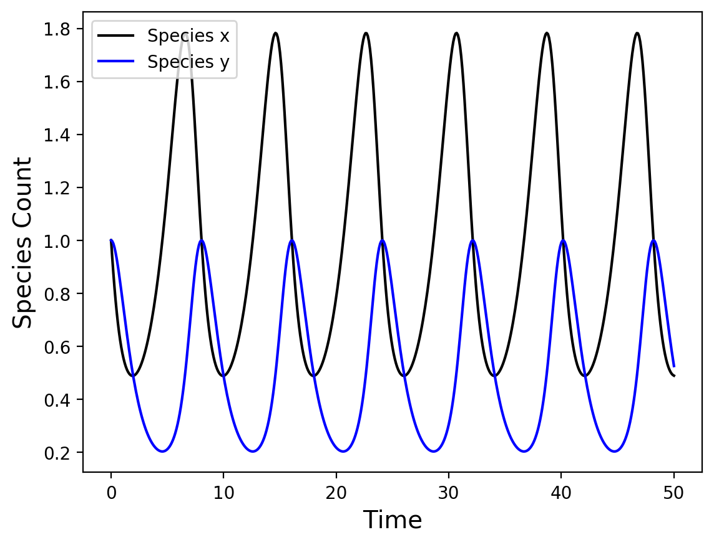

Predator Prey
The predator-prey problem, also known as the Lotka-Volterra equations, are a prototypical system of first order ODEs.
In this case, x is a population of "prey" species, y is a population of "predator" species, and the variables , , , and determine the relationship and behavior of the two populations.
In order to make this system of ODEs legible to CRANE, it must be written in terms of a system of "reactions". In this case, x and y are species concentrations, while , , , and may be thought of as reaction coefficients. The set of "reactions" that corresponds to the two ODEs shown above is:
Note that the fourth "reaction" does not have a product; species y is simply consumed and does not produce anything. The species z denotes an arbitrary sink term in this case.
These equations may be directly input into CRANE to solve this system of equations. Assigning the rate coefficients values of , , , and :
[ChemicalReactions]
[./ScalarNetwork]
species = 'x y'
reactions = 'x -> x + x : 0.666667
x + y -> y : 1.333333
y + x -> x + y + y : 1
y -> z : 1'
[../]
[]
The result of this simulation is shown below.

Predator and prey species plotted as a function of "time". As the prey population increases, the predator species "consumes" more and begins to increase in population as well. Eventually too many prey species are consumed and both species collapse before starting again.